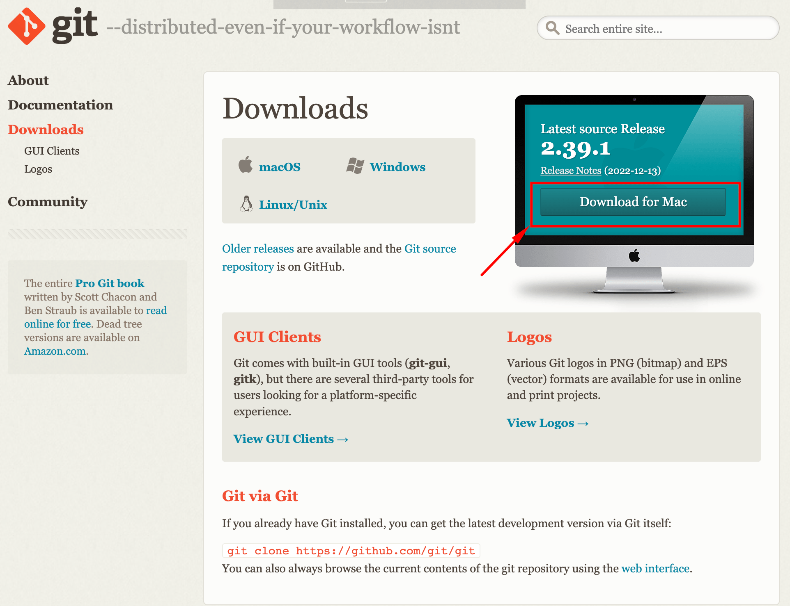
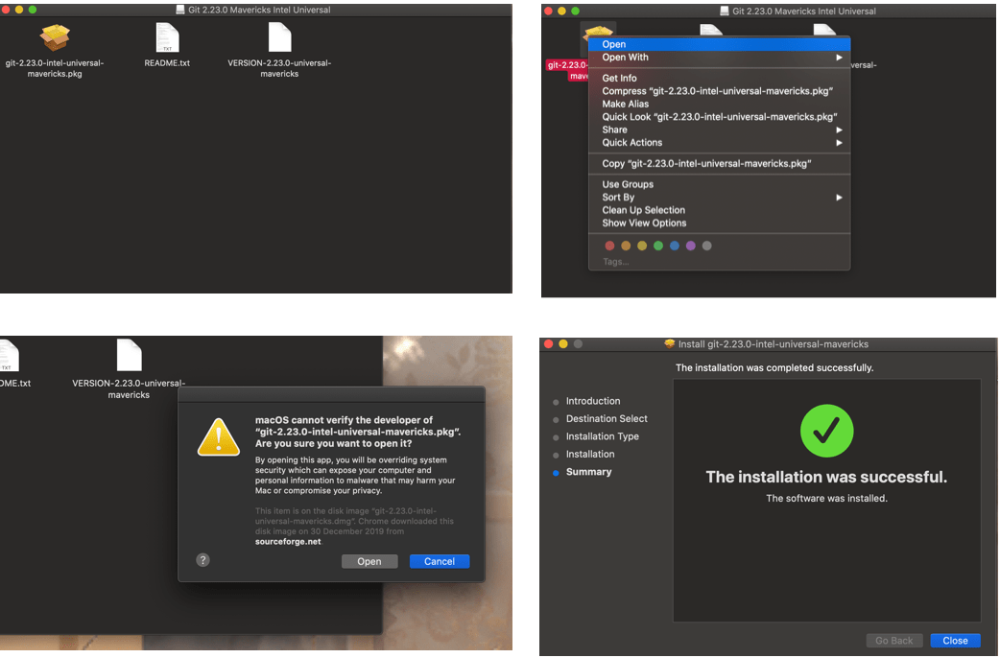
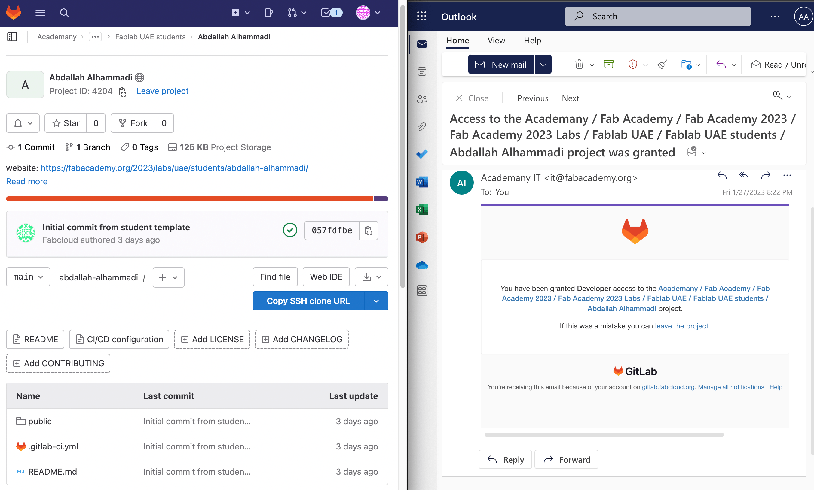
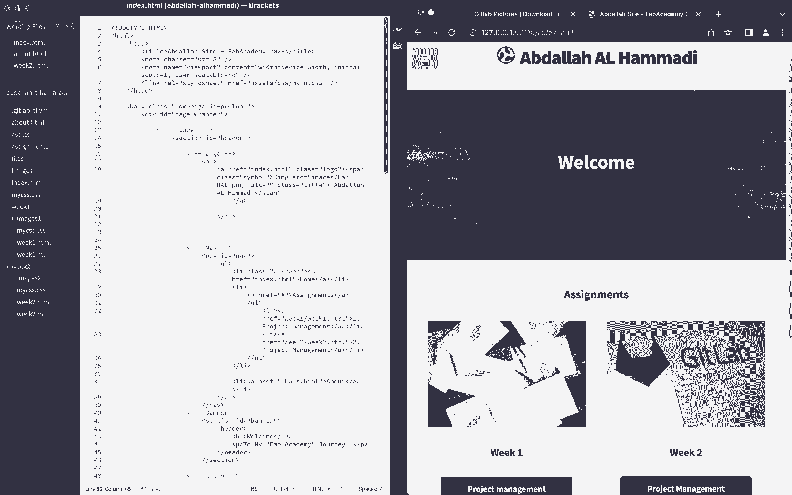
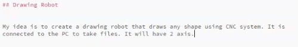
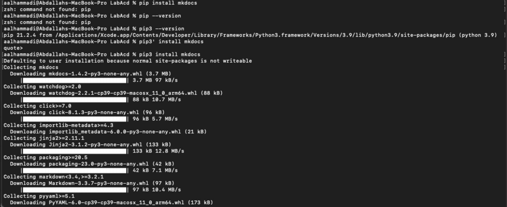
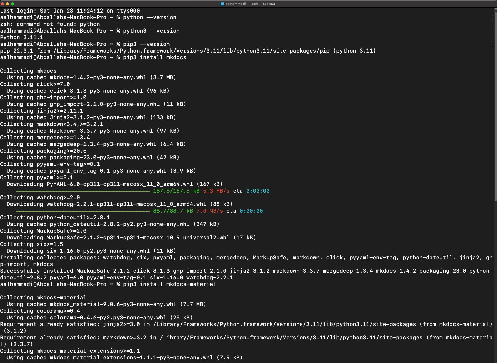
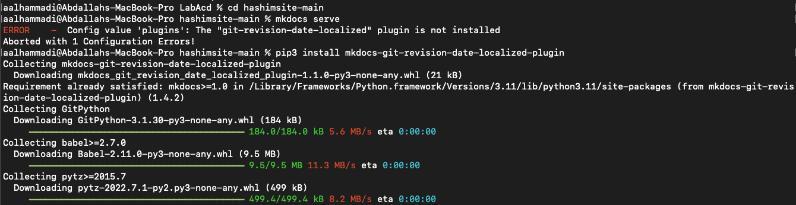

To be familiar with GitLab.
Build my own website and learn some HTML.
Git.
Brackets.
Mkdocs
To make sure that i am sharing my info in the right and easy way , and as Neil guide us to get an account in Gitlab and configure it with our computer by allowing it to share the files by the SSh-key
First I did download Git for Mac in my laptop. Git is VCS (version control system) locally track changes in my projects/folders and push & pull changes from remote repositories like Gitlab. This definition was mention in this tutorial I watch it to learn more about Git and GitLab.

The second step is Installing Git, I faced some problems when I try to click the package of compressed installer files to install it, I figure out then I need to press right click and click on open to give permeation to download the file. This happens sometime in Mac when free programs are downloaded from the internet for safety reasons.

The next step is to create an account in Gitlab, its powerful tool to manage projects and sharing them. I was hoping to know about it before, I think it will be a useful tool to use it in university study.

What is Bash? Bash is a command processor that typically runs in a text window where the user types commands that cause actions. Bash can also read and execute commands
Before using terminal I learn few bash commands
The first step in configuration Git in Mac operating system is to open the Terminal and type git --version to check if Git correctly installed by showing the number of the version. we need to do the configuration only once to connect my device with my account in Gitlab.

Enter my Gitlab username and E-mail :


The next step is Generating the ssh key pair in order to insure the connection between the Gitlab and my laptop secure, Also I will not need to enter my username and password each time.
By typing this command ssh-keygen –t –b 4096 –c example@hotmail.com as shown the screenshot of key fingerprint generated only for my device.

Then .ssh folder will generate, inside it there is file called id_rsa.pud we open it with text reader and copy all text or I used bash command (cat) to print it in the terminal then I copy it.
Afterward, I open Gitlab > settings > ssh keys, I did paste the key there and press add key.


The last step I did receive confirmation E-mail that the key is added to my account.

We did learn two important commands that we will use it frequently which are:
Transfer the files and folders from Gitlab to my device (locally) and the used command is:
```
git clone git@gitlab.fabcloud.org:academany/fabacademy/2023/labs/uae/students/abdallah-alhammadi.git
```The link used in the command above we can get it from Gitlab as shown in the screenshot below:

When we do clone in Mac, Massage will appear asking Are you sure you want to continue connecting (yes/No)? we must answer yes.
Whenever I update my files or folders locally, I need to type the below commands to update my repository in Gitlab:
git add .
git commit –m " message "
git push| Command | Function |
|---|---|
| git pull | Bring and merge changes on the remote server to the directory. |
| git add –all | Add all new or modified files to the remote repository. |
| git commit | Commit changes to head, each file commit described by a message. |
| git push | Send changes to the master branch of your remote repository. |

It’s important to remember before type any git command, to choose the directory where the commands will be applied by using this command: cd file/folder "name" . As shown above I did enter desktop > LabAcd > abdallah-alhammadi folder, afterward I push the changes.

For the website I used free templet called Jackson from colorlib, this was my first time to editing website using HTML (Hypertext Markup Language). Its language used for documents designed to display in a web browser. I did use Brackets which is text editor to do the needed changes in the templets for my website, I like using Brackets because it allowing having both screen of the website and live preview together to work in code and see the changes happens in website in same time.
In addition, I did use Mkdocs its editor that create .md files using Markdown language. This language similar to HTML but more easy and understandable, I select to use it in written my documentation to save time as I don’t have experience in HTML.
Screen shot of my work in Brackets :

MkDocs is a simple and static site generator that’s prepared for building project documentation.
Here I did summarize the commands for activation MKdocs :
python --version
sudo easy_install pip
pip --version
sudo pip install mkdocs
sudo pip install mkdocs-material
mckdocs –version
Sudo mckdocs serveScreen shot when I was testing (Mkdocs):

It was really difficult to choose a specific template for your site, and in the midst of browsing the websites of the Fab Academy students, I liked a specific site, so I decided to use this theme, Many Thanks for Fatima . I used Fatima's design and I liked the way she organized the site.
After testing both (HTML) & (Mkdocs) I decided to work with normal (HTML) using "Brackets", that because I am used to (HTML) sinc High school and becuse I face some problem while downloading (Mkdocs) I solved all the problems, but I liked working on the html.
Screen shot for (Mkdocs) Problems:


I discover that I have to use python3 in terminal instead of python, that same with pip -> pip3

pip3 install mkdocs-git-revision-date-localized-plugin
Mkdocs-git-revision I used this link to solve the problem that shown above.
I learned to removed all the files related to the old push files using the below commands.
git rm -r " file_name.file_type"
git commit -m "Comments"
git push